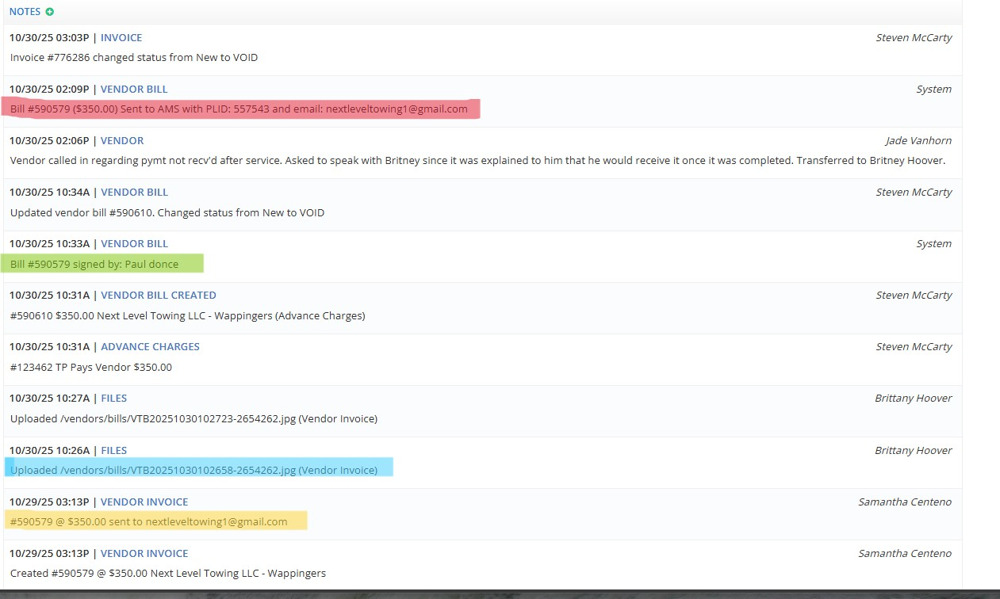

1. Examine the move details after being marked delivered
This move has been completed, invoiced and
paid.
Notes in YELLOW named
"VENDOR INVOICE" are related to us requesting an
esignature to our invoice- not that we have submitted payment. Once a move is marked completed - the vendor receives an email from us which is a rate confirmation / invoice for them to sign for payment. ONLY vendors with an SSTA will be able to sign this. All other vendors must send an invoice to ersinvoice@transitpros.com for payment processing.
Notes in BLUE named
"FILES" indicate that a vendor invoice has been uploaded into the move. The move is ready to be paid if vendor invoice aligns with cost documented by TP.
Notes in GREEN named
"VENDOR BILL" show that "PAUL DONCE" e-signed our invoice and this move is ready to be paid. Again - only vendors with an SSTA will be able to do this. Do not request that leads resend an esignature link because the vendor is unable to sign UNLESS the vendor has an SSTA agreement.
Notes in RED named
"VENDOR BILL" indicate that a payment was submitted by Transit Pros for $350 on 10/30 at 2:09PM and was sent to nextleveltowing1@gmail.com. This payment remittance would come directly from commerce bank and NOT a Transit Pros email. If you do NOT see this note with "AMS" in it - the move has NOT been paid. Make sure the vendor checks their spam and only email leads if they are unable to find the payment email.
2. If no payment has been issued - look for an invoice or esignature.
You can also check the
"Files" tab and see if we manually uploaded an invoice
from the vendor.
If either of these are present - payment should be processing within 24-48
hours of being invoiced.
If the vendor has waited more than 24-48 hours for payment - send an
email to
leads@transitpros.com with these details.
3. If we haven't received an invoice
Here you can see the move was marked delivered and our system sent out an invoice to be signed (if vendor has an SSTA). You can also see there is no invoice uploaded to the move after it was marked delivered.
This move has not been paid because we do not have a signature or invoice.
Once the vendor signs or emails an invoice, the system will then allow accounting to process a payment.
If you look in the
"Files" Tab you will see that an invoice has not been manually uploaded either.